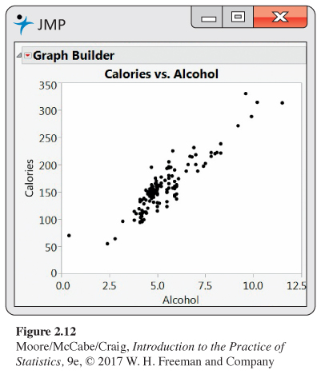

SECTION 2.2 EXERCISES
For Exercises 2.10 and 2.11, see page 85; for Exercises 2.12 and 2.13, see page 87; for Exercise 2.14, see page 90; and for Exercise 2.15, see page 92.
Question 2.16
2.16 Make some sketches. For each of the following situations, make a scatterplot that illustrates the given relationship between two variables.
(a) No apparent relationship.
(b) A strong negative linear relationship.
(c) A weak positive relationship that is not linear.
(d) A more complicated relationship. Explain the relationship.
97
Question 2.17
2.17 What’s wrong? Explain what is wrong with each of the following:
(a) If two variables are negatively associated, then low values of one variable are associated with low values of the other variable.
(b) A stemplot can be used to examine the relationship between two variables.
(c) In a scatterplot, we put the response variable on the x axis and the explanatory variable on the y axis.
Question 2.18
2.18 Blueberries and anthocyanins. Anthocyanins are compounds that have been associated with health benefits associated with the heart, bones, and the brain. Blueberries are a good source of many different anthocyanins. Researchers at the Piedmont Research Station of North Carolina State University have assembled a database giving the concentrations of 18 different anthocyanins for 267 varieties of blueberries.9 Four of the anthocyanins measured are delphinidin-3-arabinoside, malvidin-3-arabinoside, cyanidin-3-galactoside, and delphinidin-3-glucoside, all measured in units of mg per 100g of berries (dry weight). In the data file, we have simplified the names of these anthocyanins to Antho1, Antho2, Antho3, and Antho4. In Exercises 1.167 and 1.168 (page 77), you examined the distributions of each Antho3 and Antho4.
BERRIES
(a) Make a scatterplot of the data with Antho3 on the x axis and Antho4 on the y axis.
(b) Describe the form, direction, and strength of the relationship.
(c) Are there any outliers or unusual observations?
(d) Is it useful to add a straight line to your scatterplot? Explain your answer.
(e) If you have access to the appropriate software, explore the use of a scatterplot smoother to understand this relationship. Summarize what you have found using this method.
Question 2.19
2.19 Blueberries and anthocyanins with logs. Refer to the previous exercise. Transform each of the variables with a log, make a scatterplot and answer the questions in the previous exercise for the transformed data.
BERRIES
Question 2.20
2.20 Blueberries and anthocyanins: Raw data or logs. Refer to Exercises 2.18 and 2.19.
(a) Compare your results from the two exercises.
(b) For exploring and explaining the relationship between Antho4 and Antho3, do you prefer the analysis you performed in Exercise 2.18 or the one you performed in Exercise 2.19? Give reasons for your answer.
BERRIES
Question 2.21
2.21 Fuel consumption. Natural Resources Canada tests new vehicles each year and reports several variables related to fuel consumption for vehicles in different classes.10 For 2015 they provide data for 527 vehicles that use regular fuel. Two variables reported are carbon dioxide (CO2) emissions and highway fuel consumption. CO2 is measured in grams per kilometer (g/km) and highway fuel consumption measured in liters per 100 kilometers (L/100km).
CANFREG
(a) Make a scatterplot of the data with highway fuel consumption on the x axis and CO2 emissions on the y axis.
(b) Describe the form, direction, and strength of the relationship.
(c) Are there any outliers or unusual observations?
(d) Is it useful to add a straight line to your scatterplot? Explain your answer.
(e) If you have access to the appropriate software, explore the use of a scatterplot smoother to understand this relationship. Summarize what you find using this method.
Question 2.22
2.22 Fuel consumption with a line. Refer to the previous exercise.
CANFREG
(a) Add a line to the plot. To what extent to you think that the line does a good job of summarizing the relationship?
(b) If your have the appropriate software, use smooth curves to examine the relationship. Does your analysis support the idea of using a straight line to summarize the relationship? Explain your answer.
Question 2.23
2.23 Fuel consumption for different types of vehicles. Refer to the previous two exercises. Those exercises examined data for vehicles that used regular fuel. Data are also available for vehicles that use several other types of fuel. There are 1067 vehicles in total. The variable Fuel has four different possible values: X, for regular fuel; Z, for premium fuel; D, for diesel; and E, for ethanol.
CANFUEL
(a) Make a scatterplot of all of the data using different symbols or colors for the different fuel types.
(b) Does the relationship between CO2 and highway fuel consumption depend upon the type of fuel that the vehicle uses? Explain your answer.
Question 2.24
2.24 Bone strength. Osteoporosis is a condition where bones become weak. It affects more than 200 million people worldwide. Exercise is one way to produce strong bones and to prevent osteoporosis. Because we use our dominant arm (the right arm for most people) more than our nondominant arm, we expect the bone in our dominant arm to be stronger than the bone in our nondominant arm. By comparing the strengths, we can get an idea of the effect that exercise can have on bone strength. Here are some data on the strength of bones, measured in Newton meters divided by 1000 (Nm/1000), for the arms of 15 young men:11
ARMSTR
98
| ID | Nondominant | Dominant | ID | Nondominant | Dominant |
|---|---|---|---|---|---|
| 1 | 15.7 | 16.3 | 9 | 15.9 | 20.1 |
| 2 | 25.2 | 26.9 | 10 | 13.7 | 18.7 |
| 3 | 17.9 | 18.7 | 11 | 17.7 | 18.7 |
| 4 | 19.1 | 22.0 | 12 | 15.5 | 15.2 |
| 5 | 12.0 | 14.8 | 13 | 14.4 | 16.2 |
| 6 | 20.0 | 19.8 | 14 | 14.1 | 15.0 |
| 7 | 12.3 | 13.1 | 15 | 12.3 | 12.9 |
| 8 | 14.4 | 17.5 |
Before attempting to compare the arm strengths of the nondominant and dominant arms, let’s take a careful look at the data for these two variables.
(a) Make a scatterplot of the data with the nondominant arm strength on the x axis and the dominant arm strength on the y axis.
(b) Describe the overall pattern in the scatterplot and any striking deviations from the pattern.
(c) Describe the form, direction, and strength of the relationship.
(d) Identify any outliers.
(e) Is the relationship approximately linear?
Question 2.25
2.25 Bone strength for baseball players. Refer to the previous exercise. The study collected arm bone strength information for two groups of young men. The data in the previous exercise were for a control group. The second group in the study comprised men who played baseball. We know that these baseball players use their dominant arm in throwing (those who throw with their nondominant arm were excluded), so they get more arm exercise than the controls. Here are the data for the baseball players:
| ID | Nondominant | Dominant | ID | Nondominant | Dominant |
| 16 | 17.0 | 19.3 | 24 | 15.1 | 19.4 |
| 17 | 16.9 | 19.0 | 25 | 13.5 | 20.4 |
| 18 | 17.7 | 25.2 | 26 | 13.6 | 17.1 |
| 19 | 21.2 | 37.7 | 27 | 20.3 | 26.5 |
| 20 | 21.0 | 40.3 | 28 | 17.3 | 30.3 |
| 21 | 14.6 | 20.8 | 29 | 14.6 | 17.4 |
| 22 | 31.5 | 36.9 | 30 | 22.6 | 35.0 |
| 23 | 14.9 | 21.2 |
Answer the questions in the previous exercise for the baseball players.
ARMSTR
Question 2.26
2.26 Compare the baseball players with the controls. Refer to the previous two exercises.
ARMSTR
(a) Plot the data for the two groups on the same graph using different symbols for the baseball players and the controls.
(b) Use your plot to describe and compare the relationships for the two variables. Write a short paragraph summarizing what you have found.
Question 2.27
2.27 Parents’ income and student loans. How well does the income of a college student’s parents predict how much the student will borrow to pay for college? We have data on parents’ income and college debt for a sample of 1200 recent college graduates. What are the explanatory and response variables? Are these variables categorical or quantitative? Do you expect a positive or negative association between these variables? Why?
Question 2.28
2.28 What’s in the beer? The website beer100.com advertises itself as “Your Place for All Things Beer.” One of their “things” is a list of 159 domestic beer brands with the percent alcohol, calories per 12 ounces, and carbohydrates per 12 ounces (in grams).12
BEERD
(a) Figure 2.12 gives a scatterplot of calories versus percent alcohol. Give a short summary of what can be learned from the plot.
Figure 2.12: Figure 2.12 Scatterplot of calories versus percent alcohol for 159 domestic brands of beer, Exercise 2.28.99
(b) One of the points is an outlier. Find the brand of the outlier. How is this brand of beer different from the other brands?
(c) Remove the outlier from the data set and generate a scatterplot of the remaining data.
(d) Describe the relationship between calories and percent alcohol based on what you see in your scatterplot.
Question 2.29
2.29 More beer. Refer to the previous exercise.
BEERD
(a) Make a scatterplot of calories versus percent alcohol using the data set without the outlier.
(b) Describe the relationship between these two variables. If your software is capable, use a line and smoothers to explore the relationship.
Question 2.30
2.30 Imported beer. The beer100 website also gives data for imported beers. Describe the relationship between calories and percent alcohol for these imported beers.
BEERI
Question 2.31
2.31 Compare domestic with imported. Plot calories versus percent alcohol for domestic and imported beers on the same scatterplot. Use different colors or symbols for the two types of beers. Summarize what this plot tells you about the relationship and the difference between the two types of beer. In particular, note any characteristics that are better shown in this plot relative to what was learned in Exercises 2.28, 2.29, and 2.30.
BEER
Question 2.32
2.32 Decay of a radioactive element. Barium-137m is a radioactive form of the element barium that decays very rapidly. It is easy and safe to use for lab experiments in schools and colleges.13 In a typical experiment, the radioactivity of a sample of barium-137m is measured for one minute. It is then measured for three additional one-minute periods, separated by two minutes. So data are recorded at one, three, five, and seven minutes after the start of the first counting period. The measurement units are counts. Here are the data for one of these experiments:14
DECAY
| Time | 1 | 3 | 5 | 7 |
| Count | 578 | 317 | 203 | 118 |
(a) Make a scatterplot of the data. Give reasons for the choice of which variables to use on the x and y axes.
(b) Describe the overall pattern in the scatterplot and any striking deviations from the pattern.
(c) Describe the form, direction, and strength of the relationship.
(d) Identify any outliers.
(e) Is the relationship approximately linear?
Question 2.33
2.33 Use a log for the radioactive decay. Refer to the previous exercise. Transform the counts using a log transformation. Then repeat parts (a) through (e) for the transformed data and compare your results with those from the previous exercise.
DECAY
Question 2.34
2.34 Internet use and babies. The World Bank collects data on many variables related to world development for countries throughout the world. Two of these are Internet use, in number of users per 100 people, and birthrate, in births per 1000 people.15 Figure 2.13 is a scatterplot of birthrate versus Internet use for the 106 countries that have data available for both variables.
INBIRTH
(a) Describe the relationship between these two variables.
(b) A friend looks at this plot and concludes that using the Internet will decrease the number of babies born. Write a short paragraph explaining why the association seen in the scatterplot does not provide a reason to draw this conclusion.
Question 2.35
2.35 Try a log. Refer to the previous exercise.
INBIRTH
(a) Make a scatterplot of the log of births per 1000 people versus Internet users per 100 people.
(b) Describe the relationship that you see in this plot and compare it with Figure 2.13.
(c) Which plot do you prefer? Give reasons for your answer.
100
Question 2.36
2.36 Make another plot. Refer to Exercise 2.34.
INBIRTH
(a) Make a new data set that has Internet users expressed as users per 10,000 people and births as births per 10,000 people.
(b) Explain why these transformations to give new variables are linear transformations. (Hint: See linear transformations on page 44.)
(c) Make a scatterplot using the transformed variables.
(d) Compare your new plot with the one in Figure 2.13.
(e) Why do you think that the analysts at the World Bank chose to express births as births per 1000 people and Internet users as users per 100 people?
Question 2.37
 2.37 Body mass and metabolic rate. Metabolic rate, the rate at which the body consumes energy, is important in studies of weight gain, dieting, and exercise. The following table gives data on the lean body mass and resting metabolic rate for 12 women and 7 men who are subjects in a study of dieting. Lean body mass, given in kilograms, is a person’s weight leaving out all fat. Metabolic rate is measured in calories burned per 24 hours, the same calories used to describe the energy content of foods. The researchers believe that lean body mass is an important influence on metabolic rate.
2.37 Body mass and metabolic rate. Metabolic rate, the rate at which the body consumes energy, is important in studies of weight gain, dieting, and exercise. The following table gives data on the lean body mass and resting metabolic rate for 12 women and 7 men who are subjects in a study of dieting. Lean body mass, given in kilograms, is a person’s weight leaving out all fat. Metabolic rate is measured in calories burned per 24 hours, the same calories used to describe the energy content of foods. The researchers believe that lean body mass is an important influence on metabolic rate.
BMASS
| Subject | Sex | Mass | Rate | Subject | Sex | Mass | Rate |
| 1 | M | 62.0 | 1792 | 11 | F | 40.3 | 1189 |
| 2 | M | 62.9 | 1666 | 12 | F | 33.1 | 913 |
| 3 | F | 36.1 | 995 | 13 | M | 51.9 | 1460 |
| 4 | F | 54.6 | 1425 | 14 | F | 42.4 | 1124 |
| 5 | F | 48.5 | 1396 | 15 | F | 34.5 | 1052 |
| 6 | F | 42.0 | 1418 | 16 | F | 51.1 | 1347 |
| 7 | M | 47.4 | 1362 | 17 | F | 41.2 | 1204 |
| 8 | F | 50.6 | 1502 | 18 | M | 51.9 | 1867 |
| 9 | F | 42.0 | 1256 | 19 | M | 46.9 | 1439 |
| 10 | M | 48.7 | 1614 |
(a) Make a scatterplot of the data, using different symbols or colors for men and women.
(b) Is the association between these variables positive or negative? What is the form of the relationship? How strong is the relationship?
(c) Does the pattern of the relationship differ for women and men? How do the male subjects as a group differ from the female subjects as a group?